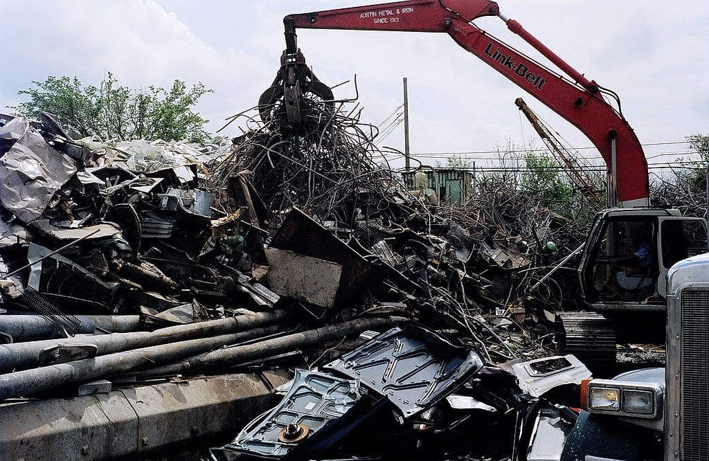

01
Commercio rottami e metalli
Acquistiamo e ritiriamo rottami ferrosi e metalli non ferrosi da privati, officine, artigiani, cantieri e aziende, in tutta Italia. Pesatura trasparente, valutazione secondo le quotazioni di mercato del giorno, ritiro con mezzi propri e magazzino di proprietà a Fino Mornasco. Il ritiro dei rottami è a domicilio: presso abitazioni, officine, cantieri e aziende, nel giorno e all'orario concordati.
- Ferro, acciaio, inox e ghisa
- Rame, ottone, bronzo, alluminio, piombo, zinco
- Cavi elettrici, radiatori, motori e lavorazioni di officina
- Ritiri in tutta Italia, svuotamento di magazzini e capannoni
- Magazzino proprio: pesatura e stoccaggio in sede, senza intermediari